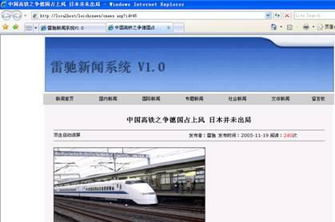
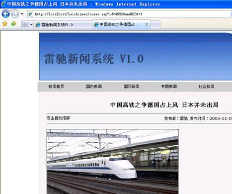
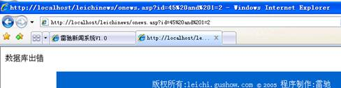
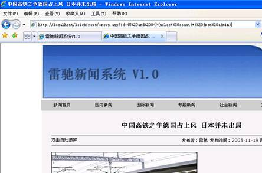
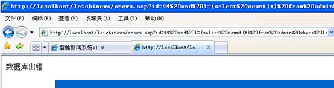
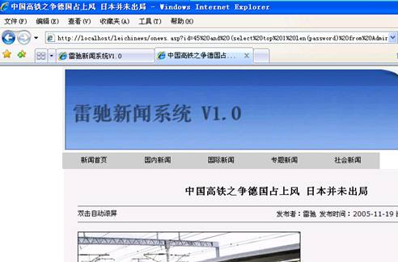
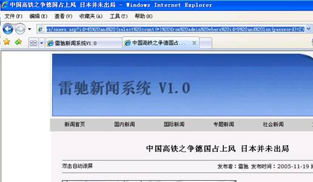
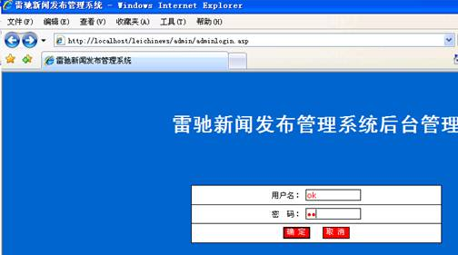
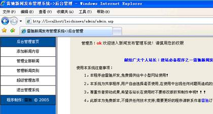

1、 通过手工注入获得后台管理权限
2、 了解SQL注入的基本原理。
3、 了解手动注入的各种常用SQL语句和注入流程。
1、 认真阅读和掌握本实验相关的知识点。
2、 上机实现软件的基本操作。
3、 得到实验结果，并加以分析生成实验报告。
注：因为实验所选取的软件版本不同，学生要有举一反三的能力，通过对该软件的使用能掌握运行其他版本或类似软件的方法。
1、找到有注入漏洞的目标网站
在本实验中预先配置好一个目标网站（雷驰新闻系统），访问该网站，点击某条新闻，做是否存在注入漏洞的测试，操作如下：

图1 目标网站页面
在地址栏地址后输入 and 1=1，查看结果，结果如下：

图2 是否有注入漏洞探测
说明：页面仍能正常显示，说明未对特殊字符进行过滤，存在注入漏洞。
再在地址栏地址后输入 and 1=2，查看结果，结果如下：

图3是否有注入漏洞探测
说明：对于永假的查询式没有提示过滤，说明存在注入漏洞。
2、猜测表名
由于存在SQL的注入，即可通过多条查询语句来试图获得管理员的用户名和密码。
在某条信息地址栏后添加and 0<>(select count(*)from admin)猜测是否存在admin这个表。（根据经验，大多数程序员习惯把管理员的用户名和密码存在类似admin这样的表中），提交结果如下：

图4 猜测表名
说明：页面能正常显示，表示存在admin的表，当然若出错，则需要在刚才的SQL语句中更换admin，换成其他常用的表段名，进行猜测（如user、manage等）
3、猜测字段名
同样的方法探测在admin表中存在的字段，典型字段有admin、username、password、pass等，下面以pass为例进行探测。在地址栏最后输入：and 1=(select count(*)from admin where len(pass)>0),提交后结果如下：

图5 猜测字段名1（出错信息）
说明：页面返回出错信息，说明在admin表中不包含pass字段，需要再做猜测。同样也可以用其他SQL语句猜测password字段，如：and (select top 1 len(password) from Admin)>0提交后返回的结果如下：

图6 猜测字段名（正确页面）
说明：页面正常显示，说明存在password的字段
4、字段内容的获取。
一般来说，手动注入通常采用Ascii逐字解码法，虽然这种方法速度很慢，但肯定是可行的方法。以password字段为例，猜测字段内容:首先猜测管理员ID，测试管理员ID 一般网站的管理员不是很多的，ID也不是很大，依次用1、2、3 ... ... 测试，很快就能测到，具体测试语句为： and (select count(*) from admin where id=1)， 变换最后的数字1进行测试，直到能正常返回原页面为止。
密码长度使用类似and (select count(*) from admin where id=1 and len(password)=4)的查询语句，若页面返回正常，则猜测正确。在本例中我们多次尝试，最后使用and (select count(*) from admin where id=9
and len(password)=2)。页面返回正常，
如下图：

图7 字段内容猜测
说明：由此知道有个admin的密码为2位数，同样的方法可以猜测admin字段的长度。
再开始猜测内容，・我们猜测他admin表段的username字段的第一位内容是不是a内容一般都是英文或数字或两者混合・我们先猜是否是a 因为a是26英文中第一个字母，也是admin（超级用户）的第一个字母and 1=(select count(*) from [admin]
where mid(usrname,1,1)='a')，返回
Microsoft OLE DB Provider for ODBC Drivers 错误 '80040e10'
[Microsoft][ODBC Microsoft Access Driver] 参数不足，期待是 1。
/news/view.asp，行5
说明我们猜错了他的第一个字符不是a ，以此类推，直到检测到正确内容。
由于猜测字段内容是一个很长的过程，所以，大多数情况下，借助工具操作更为简单。
注意：这种方法只适合于对明文存放的密码的猜测，如果使用密文存放，则猜测的难度会更大（该部分内容会在工具注入部分进行描述）。
2、获取权限，以管理员用户身份登陆
一般来说查找管理员入口是手动注入的一个难点，有的网站上在页面首先会显示管理员入口的链接，此时只需要在管理员页面输入猜测得到的管理员用户名和密码，即可登陆。但若管理员入口不明，则需要通过尝试的方法获取，这种尝试是一种经验的尝试。例如admin页面，adminlogin页面、admin/admin页面等。在本试验中，尝试用admin页面，页面返回错误，则说明管理员入口不是该页面，再尝试admin/adminlogin.asp页面找到入口。输入猜测到得用户名和密码，进入管理后台。如下图：

图8 后台登录界面

图9 成功进入
通过对access数据库的手动注入过程的研究，我们应了解手动注入常使用的SQL语句，需要注意的是，由于手动注入使用SQL语句的灵活性和专业性，该种方法往往适合于有一定数据库知识的攻击者，目前，大多数的注入都是以工具代替了手动注入的过程（例如啊D，NBSI等工具），而工具工作的原理与手动注入的原理基本一致。
对于SQL数据库的手动注入与access有类似的地方，但因为SQL数据库本身的负责性和用户权限的问题，手动注入的难度比access高。